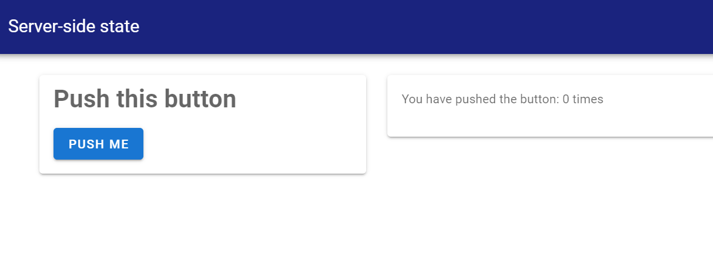

Server-side state
So far, all our apps have had not concept of 'state'. Our server-side functions take the current value of the inputs in the UI, and return some output. Our app has no memory, no way of knowing what has happened in the past.
But what if we want to know what happened in the past?
Consider a simple problem. Suppose we want to create an app that just tracks how many times the user has clicked a button, and then displays that result. With everything we've learned so far, we can't. A button input just tells the server whether it has been clicked or not: it returns only true or false.
Enter session. session is a way for you to be able to create variables that have a value that is persistent.
A quick example
To see this in action, let's create a copy of the server_state example app, which implements exactly the problem we outlined above – track how many times a button is pushed.
matte_example("server_state", "server_state")
includet("app.jl")
run_app(ServerStateExample)You'll see an app that looks something like this, and the counter on the right will increment by 1 every time your push the button. If you refresh the page (starting a new session), the counter returns to zero.

Step 1: Registering session variables
The first step in having persistent vars is defining or 'registering' them. Matte needs to know, in advance, the names of the variables you want to be able use. And you need to tell Matte what initial value that variable should have when the session first starts. This is done using the function register_session_vars. This function should be declared inside your app module (at the top level, like the ui function). It takes no inputs, and should return a Dict. This Dict maps symbols to values – the symbols are the variables that you will have access to.
In our example app, we only want one variable to track – the number of times the user has pushed the button. Let's call it count and assign it a value of 0 to begin with:
function register_session_vars()
Dict(
:count => 0
)
endStep 2: Accessing and mutating session variables
These session variables are accessed slightly differently to regular inputs. Any server function that you want to have access to a persistent variable must take an argument named session as an input. You access the session variables you registered with register_session_vars using the . syntax to access the field of the session – i.e. session.my_variable etc. You can change the value of the variable simply by assigning to this field.
In our example, we need a function that displays the current count, and that increments the count whenever my_button is pushed:
function my_count(my_button, session)
if my_button
session.count += 1
end
session.count
endThe first conditional increments the count if my_button = true (i.e. if the button has been pushed) by setting session.count += 1.
The final line simply returns the current value of the count, to be displayed in the app.
Be careful: session variables are not reactive. That means that changing the value of a session variable in one function will not induce recomputation of any other outputs that depend on that session variable.
In the next guide, we'll look at an important complement to session variables: being able to change the value of other UI elements within a server-side function.